Leapin' Leachies의 대표적인 라인 중 하나인
다스몰(Darth Maul) 라인은 한 사람의 호기심에서 시작되었습니다.
여기서 말하는 다스몰 라인은 스타워즈 캐릭터 자체가 아니라
리핀 리치스에서 이어져 온 리키에너스 게코 라인입니다.
Leapin' Leachies의 Steve는 오랫동안 리키에너스 게코를 다뤄 온 브리더로
여러 로컬과 라인을 관찰하고, 선별하고, 브리딩해 온 사람입니다.
2011년, 두 마리의 코기스에서 시작된 호기심
이야기의 시작은 2011년으로 거슬러 올라갑니다.
Steve는 당시 두 마리의 개체를 만나게 됩니다.
첫 번째 개체는 미국에서 '코기스(Koghis)'로 분양받은 수컷이었습니다.
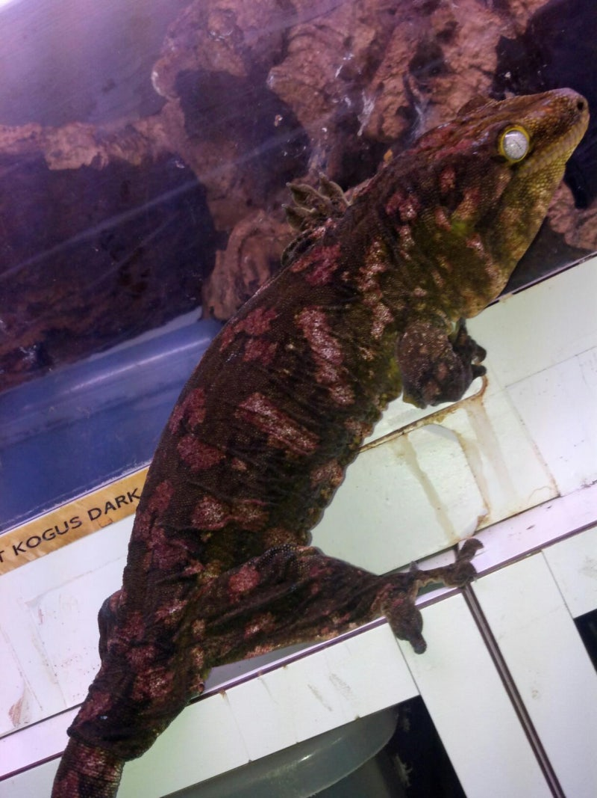
두 번째 개체는 유럽에서 역시 '코기스'로 분양받은 암컷이었습니다.
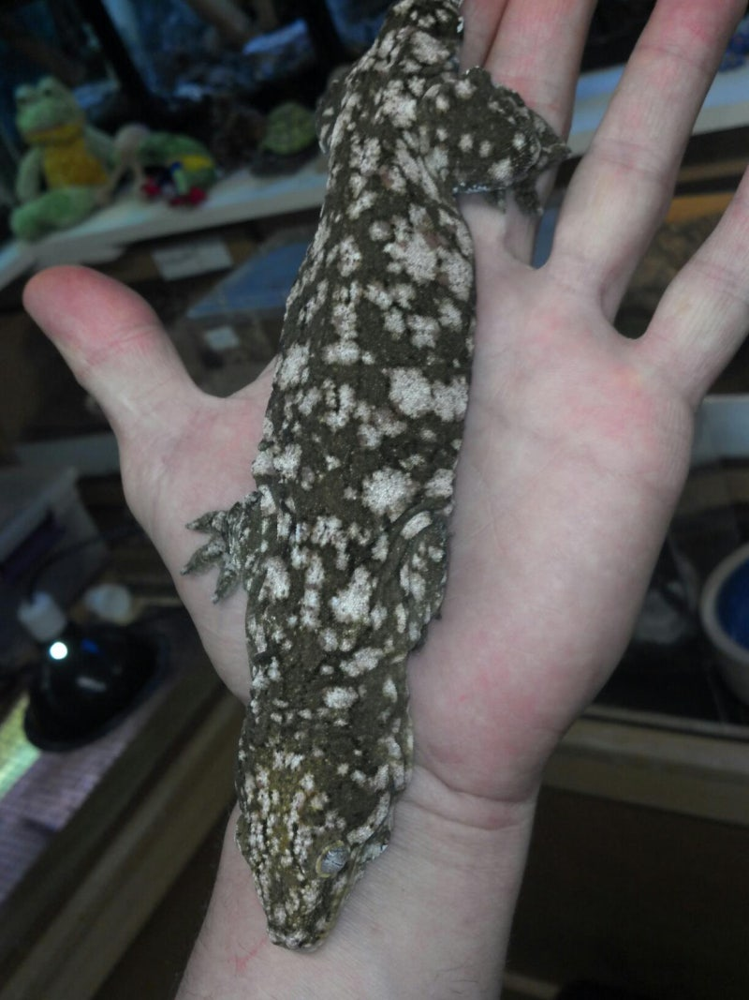
겉으로는 둘 다 코기스로 들어온 개체였지만
Steve는 두 아이를 함께 두고 관찰하면서 곧 다른 느낌을 받았습니다.
수컷은 아성체 시절부터 핑크빛 패턴을 가지고 있었고
암컷은 전형적인 코기스보다 훨씬 풍부한 패턴과 독특한 구조를 보여주었습니다.
형태도, 컬러도, Steve가 수년간 길러 온 코기스 개체들과는 확실히 달랐습니다.
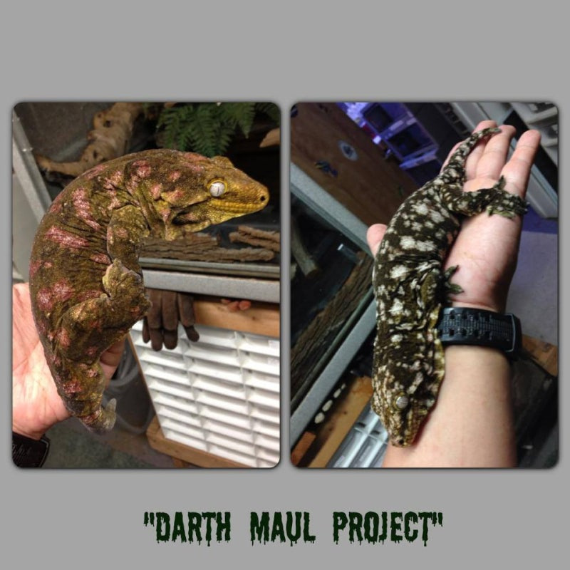
새로운 시도, 그리고 Darth Maul이라는 이름
그 차이를 그냥 지나치지 않은 것이
오늘의 다스몰 라인을 만든 첫 번째 계기였습니다.
Steve는 이 한 쌍을 함께 브리딩해 보기로 했고
그 결과로 태어난 아이들이 지금 우리가 알고 있는 다스몰 라인의 시작이 되었습니다.
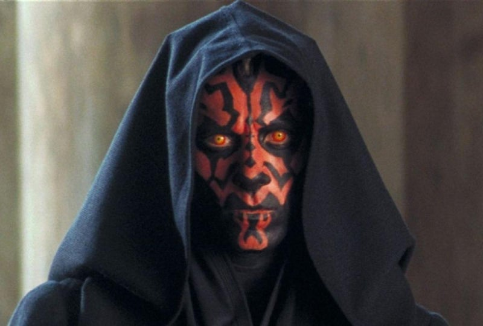
'Darth Maul'이라는 이름은 스타워즈 캐릭터에서 영감을 받아 붙여졌습니다.
검은색과 붉은색이 강하게 대비되는 모습이 그 얼굴을 떠올리게 했기 때문입니다.
이름만 놓고 봐도 라인의 첫인상이 선명하게 남습니다.
어둡고 강한 바탕, 그 위로 올라오는 붉은 패턴이 바로 이 라인의 핵심 분위기입니다.
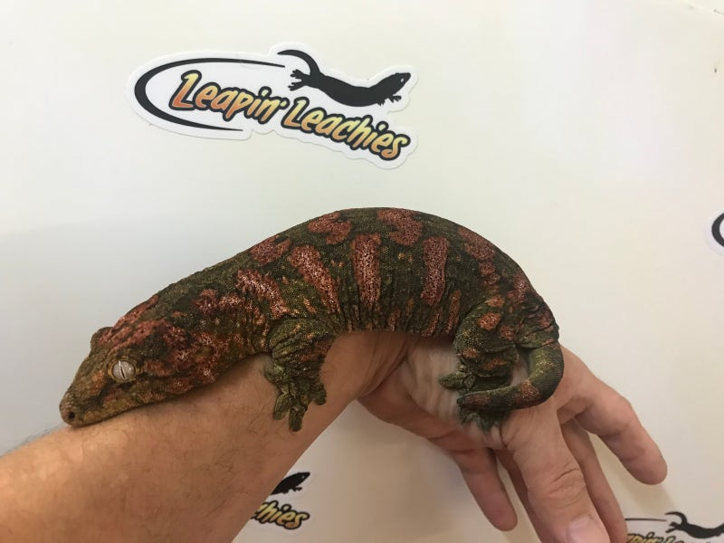
다스몰 라인의 특징
다스몰 라인의 가장 큰 특징은 짙은 초록색 또는 블랙에 가까운 베이스 위로
선명한 붉은 패턴이 펼쳐진다는 점입니다.
성체가 될수록 붉은 패턴의 깊이가 더 짙어지고
전체적인 대비도 더 강하게 살아나는 경우가 많습니다.
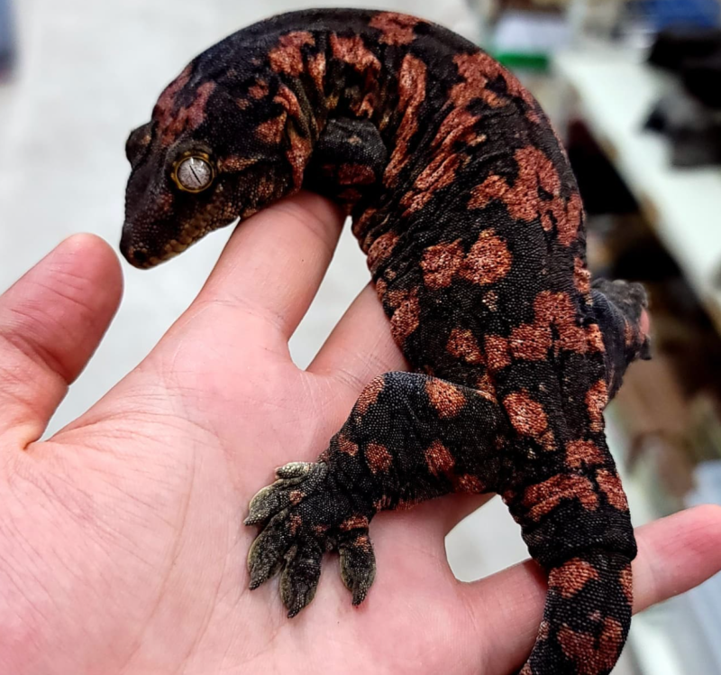
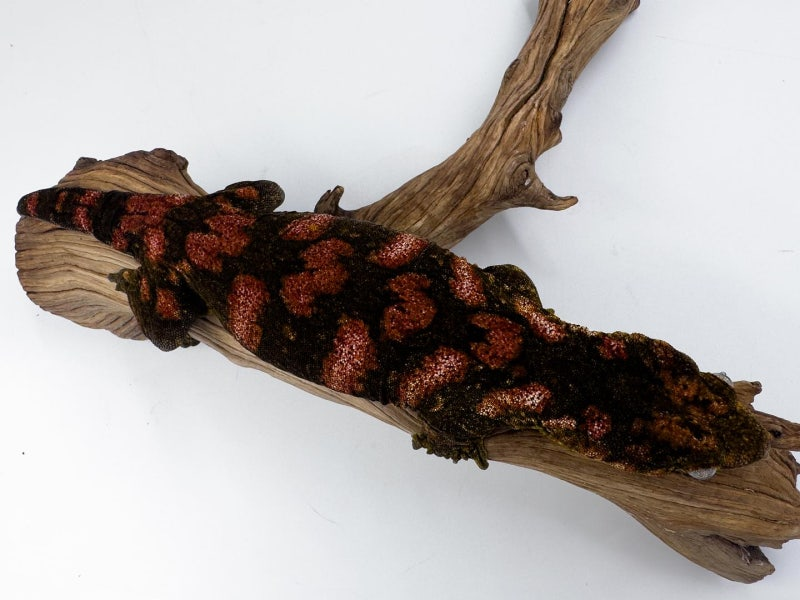
제가 특히 중요하게 보는 부분은 색감의 고정력입니다.
단순히 한두 마리만 예쁜 라인이 아니라, 세대를 지나도 특유의 방향성이 이어진다는 점이 인상적이었습니다.
지난 몇 년 동안 여러 다스몰 라인 개체를 직접 보고 수입하면서
저는 이 라인이 리핀 리치스 안에서도 꽤 안정적인 유전적 방향성을 가진 라인이라고 느꼈습니다.
이 부분은 작성자의 관찰과 경험을 바탕으로 한 평가입니다. 공식 유전식처럼 단정하기보다는, 라인의 일관성을 설명하는 문맥으로 보는 것이 좋습니다.
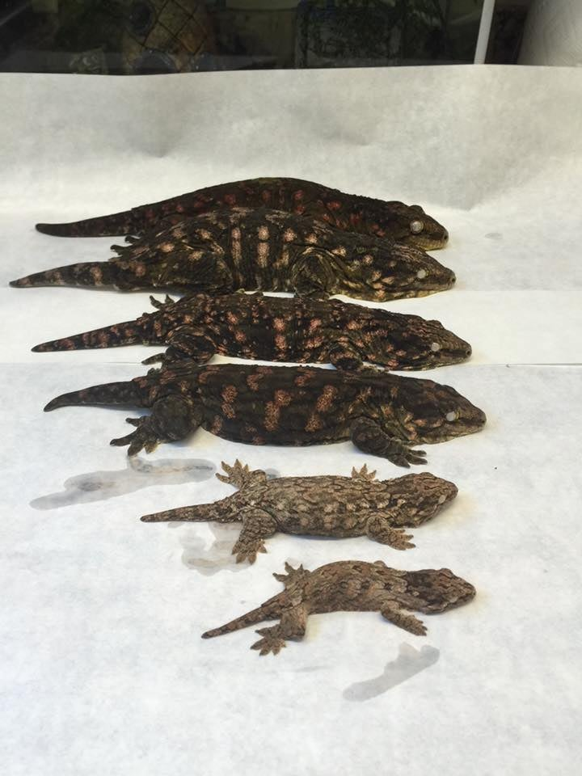
처음부터 주목받은 라인은 아니었습니다
재미있는 점은 다스몰 라인이 처음 공개됐을 때
지금처럼 큰 주목을 받지는 못했다는 사실입니다.
당시 사람들은 '다른 리키에너스와 뭐가 다르지?' 정도의 반응을 보였고
라인의 가능성이 바로 크게 알려지지는 않았습니다.
하지만 2014년, 분위기가 완전히 달라졌습니다.
그해 한 마리의 특별한 개체가 모습을 드러냈기 때문입니다.
회색빛 바디 위로 은은하게 퍼지는 보라색 패턴.
그전까지 쉽게 볼 수 없던 색감이었고, 사진 한 장만으로도 강한 인상을 남겼습니다.
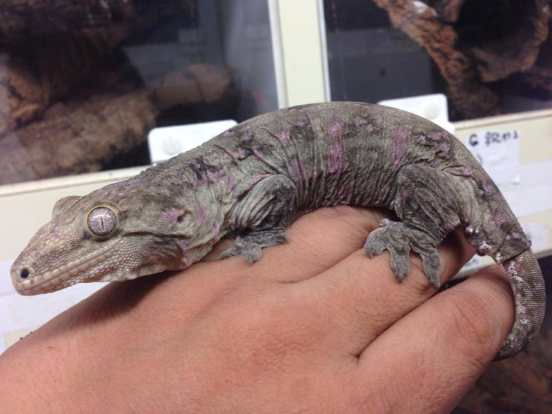
당시에는 보라색 패턴을 가진 리키에너스에 대한 관심도 높았기 때문에
이 개체의 등장은 많은 사람들의 시선을 단번에 끌었습니다.
저도 이 사진을 처음 봤을 때의 기억이 아직 생생합니다.
다스몰 라인을 다시 보게 만든 장면이었습니다.
예상하지 못했던 멜라니스틱 개체들
다스몰 라인은 2014년의 보라색 패턴 개체 이후에도
또 한 번 사람들을 놀라게 했습니다.
바로 이 라인에서 멜라니스틱(Melanistic) 개체들이 해칭되기 시작한 것입니다.
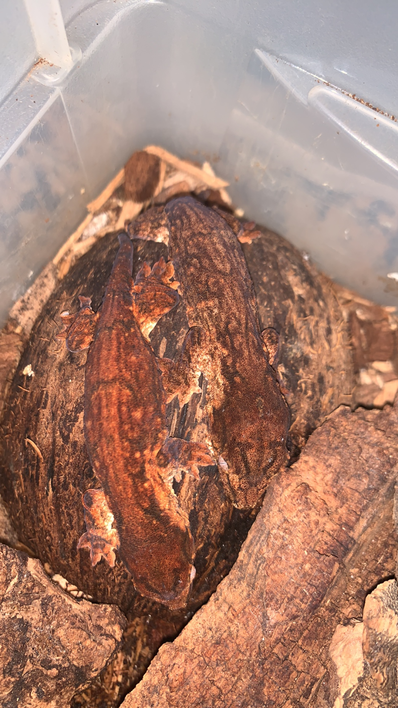
Steve 역시 이 결과에 대해 전혀 예상하지 못했다고 이야기했습니다.
그만큼 다스몰 라인은 시간이 지나며 새로운 모습을 계속 보여준 라인이었습니다.
원문 작성 시점 기준으로, 리핀에서 한국으로 들어온 멜라니스틱 다스몰 개체는 7마리로 정리되어 있습니다.
그중 6마리는 성체, 1마리는 이제 막 준성체가 된 것으로 보였습니다.
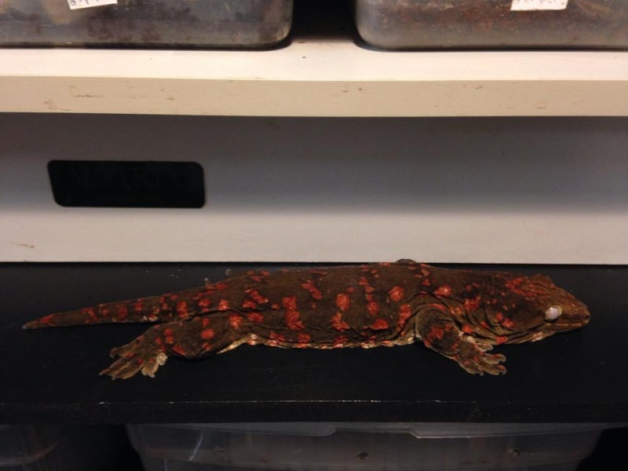
다스몰 라인이 남긴 의미
리핀 리치스의 다스몰 라인은 처음부터 화려하게 주목받은 라인은 아니었습니다.
처음에는 누구도 크게 알아보지 못했고, 차이는 천천히 드러났습니다.
하지만 시간이 지나면서 이 라인은 자기만의 색으로 말을 걸기 시작했습니다.
보라색 패턴 개체가 등장했던 순간, 그리고 멜라니스틱 개체가 해칭되던 순간이 그 흐름을 보여줍니다.
저에게 다스몰 라인은 단순한 혈통 이상의 의미를 가집니다.
관찰력과 호기심, 그리고 시간을 들인 브리딩이 어떤 결과를 만들어낼 수 있는지 보여주는 라인이기 때문입니다.
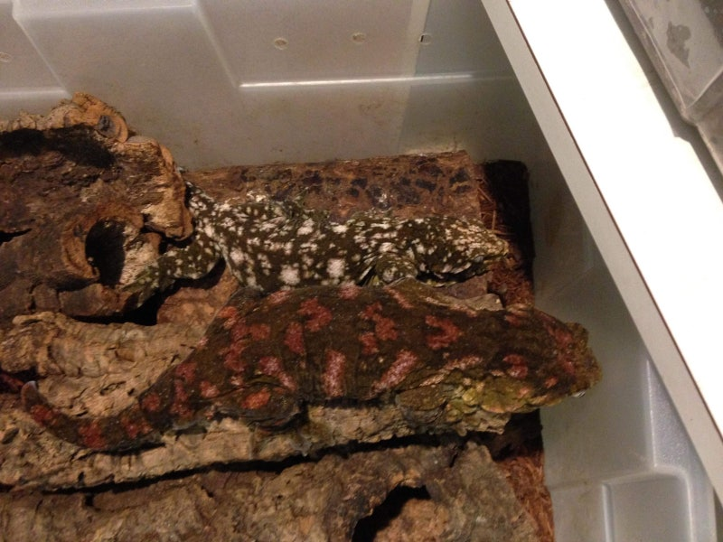
아이작의 숲에서 이 라인을 소개하는 이유도 여기에 있습니다.
유전적 아름다움, 세대를 이어 온 이야기, 그리고 그 안에 담긴 사람들의 열정까지 함께 전하고 싶었습니다.
LIFE IS BETTER WITH PETS
@isaacsforest